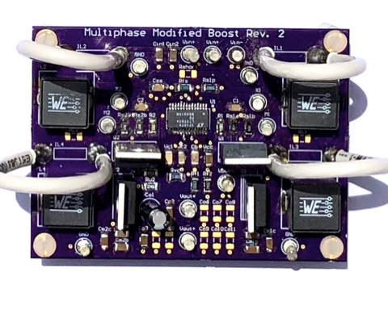
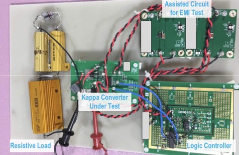

Hi, I'm Zoe
I am a problem solver with a degree in Electrical Engineering. For my first few years after college I exercised my methodical debugging skills and precise technical communication as a hardware engineer. Now I am looking for new problems to solve with software, which is part of why I learned to develop and host this site! Check out my resume or find me on LinkedIn.
About
Graduated from California Polytechnic State University San
Luis Obispo with my BS degree.

Stayed at Cal Poly to earn my MS degree. You can check out my
thesis
here.

Evaluated analog integrated circuit power products as an
evaluation engineer for Analog Devices Inc. You can check out
a paper I contributed to over on
IEEE Xplore.